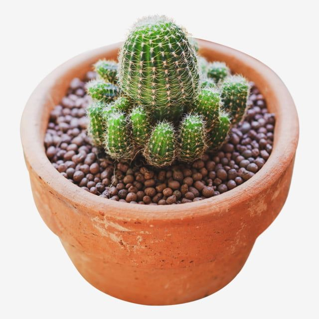

Tumbuhan
Bunga Matahari

Bunga matahari adalah tumbuhan yang terkenal karena kepala bunga yang besar dan selalu mengikuti matahari.
Kaktus
Kaktus adalah tumbuhan yang tahan kekeringan dan biasanya ditemukan di daerah gurun.
Pohon Tebu

Pohon tebu adalah tanaman yang ditanam untuk menghasilkan tebu, bahan baku gula.